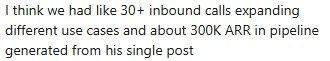
Tarun Vedula · Founder, Zaranna AI · YC
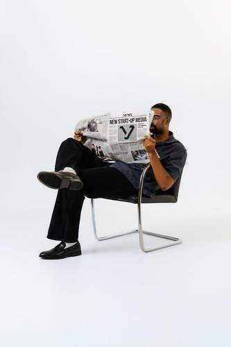

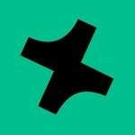
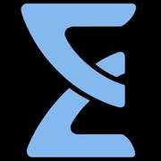
Twelve founders across six teams came to Vesting before the headline. They left with the traction that changes a trajectory — viral reach, angel checks on the spot, Y Combinator acceptances, real pipeline.
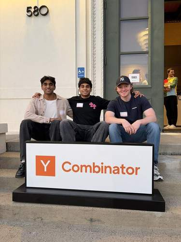
Tarun was building Zaranna AI in stealth-quiet — a YC company with a clear thesis and no megaphone. Vesting ran one post on Instagram. Within days the inbox didn’t ease up. 30+ inbound calls came in, each one expanding a different use case the team hadn’t even pitched yet. The pipeline closed at roughly $300K of ARR working — from a single post.
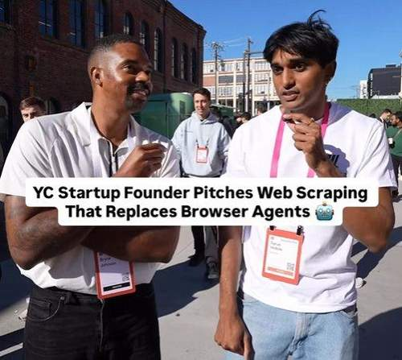

Rounak didn’t file a press release. He pitched ProjectX on Vesting’s Instagram — content engineered to move, not to inform. The post hit 3,612,440 views, 240K likes, 60K shares, and accumulated roughly three years of combined watch time. Signups overwhelmed the stack. Weeks later, accepted into Y Combinator — social proof money can’t buy.
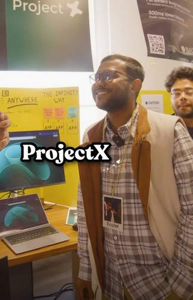
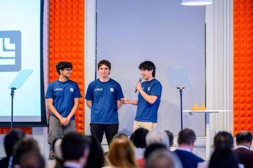
Lance builds AI agents for hotel ops. The raise needed to generate inbound, not just inform. Vesting built the announcement for the algorithm — bold visuals, one hook, engineered for distribution. In the first day: 186,585 views, 2,363 profile visits. A post that behaved like a channel.
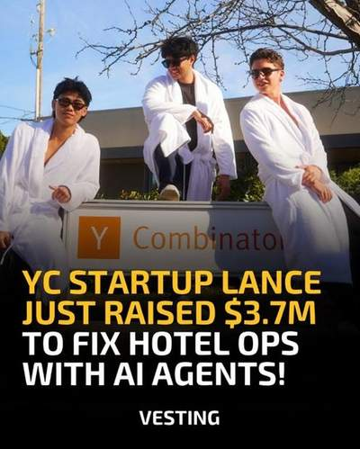
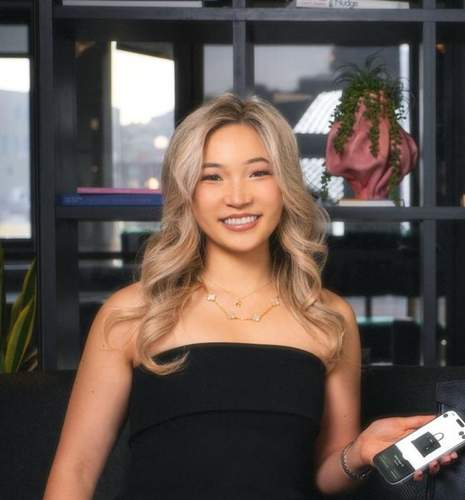
Veritas was secretly embedding microchips inside Birkin bags for authentication. Zero public presence before Vesting. We broke the story, the hook did the rest: 234,165 views in 24 hours, 1.5K likes, 755 shares. For a startup nobody knew existed — a full-blown debut.
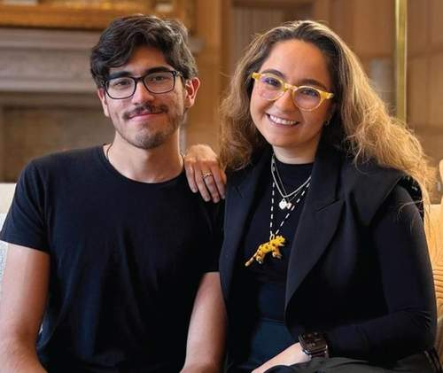
Isa was building AI agents for commercial lenders. She pitched at Vesting Live, Founders Inc Demo Day. Moved to SF, slept on couches, kept building. Brycent wrote an angel check on the spot. Twenty-seven days later, the message: “WE GOT ACCEPTED TO YC P26.”
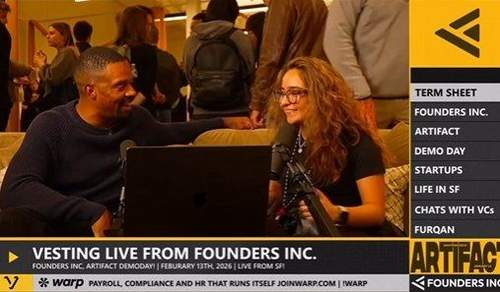
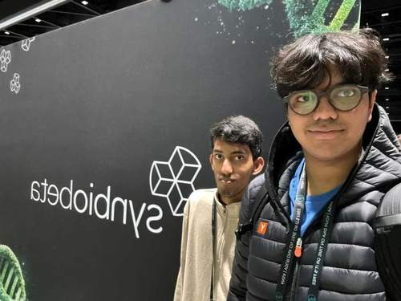
Rayan was building Enjamb Labs in stealth before Vesting filmed the launch. Vesting shipped the post and the story compounded: 161,000+ views, deep engagement from the technical community, and inbound from the kind of people Enjamb actually wanted to talk to. Weeks later: accepted into Y Combinator.
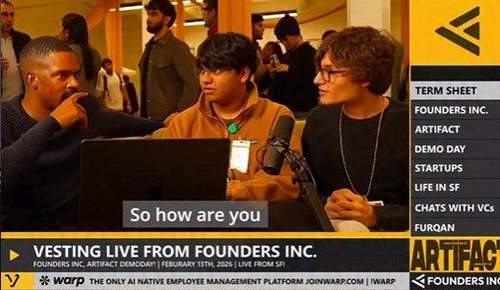
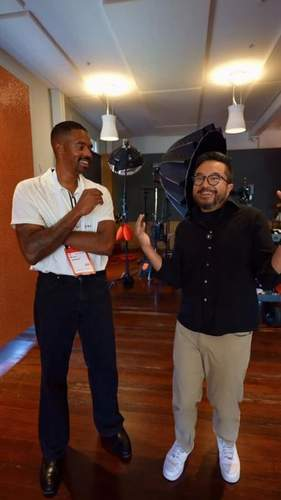
19 clips across two YC Demo Days featuring founders, startups, and YC President Garry Tan. Content engineered for distribution: the moments that don’t make it into the livestream, the quotes founders don’t yet know are theirs, the reactions that travel. The clips racked up 1.13M views — a new lane for YC visibility.
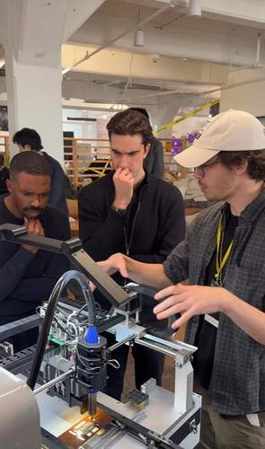
29 clips across two Founders Inc events: pitches, demos, Vesting Live sessions, and the moments in between. The Founders Inc partnership is where our format started — a vertical integration of coverage, curation, and deal flow that produced 7.26M views, the bulk of our quarterly reach.
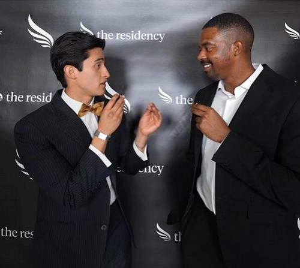
6 clips from The Residency’s demo day — an intimate event with a fraction of the footprint, but 310K views. Proof that reach is a function of storytelling, not stage size. The Residency cohort got SF-investor attention without the SF-investor crowd in the room.
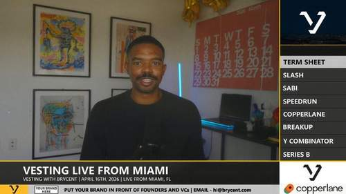
YC founders, Founders Inc residents, Thiel Fellows, VC partners — all in the same chair. No fluff, no PR-speak. Q1 2026 lineup.
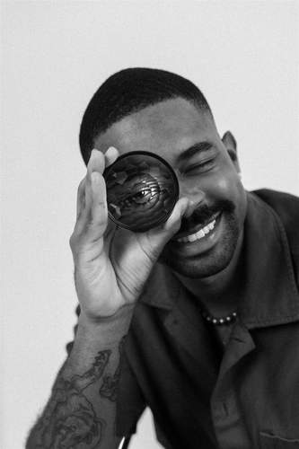
Posts, carousels, reels, IRL HQ video, long-form, the weekly show, full event coverage — whatever moves your trajectory. We take a handful of clients per quarter. Pitch us.
Pitch us →